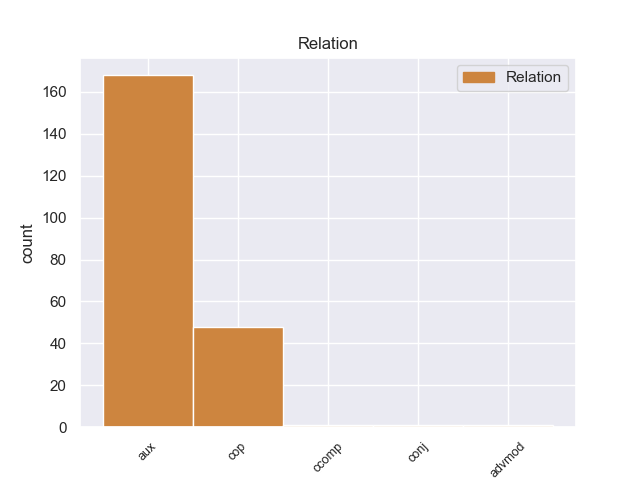
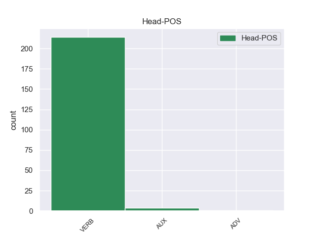
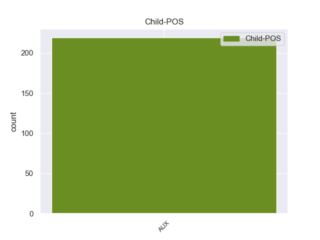

Distribution of features within this leaf



Agreement Rules sorted by frequency.
When the dependent token is None
1 από _ _ _ _ 0 _ _ _
2 τα _ _ _ _ 0 _ _ _
3 δε _ _ _ _ 0 _ _ _
4 έγγραφα _ _ _ _ 0 _ _ _
5 της _ _ _ _ 0 _ _ _
6 υπόθεσης _ _ _ _ 0 _ _ _
7 προκύπτει _ _ _ _ 0 _ _ _
8 ότι _ _ _ _ 0 _ _ _
9 δεν _ _ _ _ 0 _ _ _
10 φαίνεται _ _ _ _ 0 _ _ _
11 να _ _ _ _ 0 _ _ _
12 έχει έχει AUX _ Aspect=Imp|Mood=Ind|Number=Sing|Person=3|Tense=Pres|VerbForm=Fin|Voice=Act 13 aux _ _
13 ληφθεί ληφθεί VERB _ Aspect=Imp|Mood=Ind|Number=Sing|Person=3|Tense=Pres|VerbForm=Fin|Voice=Act 0 _ _ _
14 υπόψη _ _ _ _ 0 _ _ _
15 η _ _ _ _ 0 _ _ _
16 σύσταση _ _ _ _ 0 _ _ _
17 να _ _ _ _ 0 _ _ _
18 διαβιβαστεί _ _ _ _ 0 _ _ _
19 η _ _ _ _ 0 _ _ _
20 αίτηση _ _ _ _ 0 _ _ _
21 άρσης _ _ _ _ 0 _ _ _
22 της _ _ _ _ 0 _ _ _
23 ασυλίας _ _ _ _ 0 _ _ _
24 μόνον _ _ _ _ 0 _ _ _
25 επί _ _ _ _ 0 _ _ _
26 τη _ _ _ _ 0 _ _ _
27 βάσει _ _ _ _ 0 _ _ _
28 ακριβέστερου _ _ _ _ 0 _ _ _
29 προσδιορισμού _ _ _ _ 0 _ _ _
30 όσον _ _ _ _ 0 _ _ _
31 αφορά _ _ _ _ 0 _ _ _
32 τους _ _ _ _ 0 _ _ _
33 τόπους _ _ _ _ 0 _ _ _
34 και _ _ _ _ 0 _ _ _
35 τα _ _ _ _ 0 _ _ _
36 πρόσωπα _ _ _ _ 0 _ _ _
37 που _ _ _ _ 0 _ _ _
38 εμπλέκονται _ _ _ _ 0 _ _ _
39 σ _ _ _ _ 0 _ _ _
40 την _ _ _ _ 0 _ _ _
41 υπόθεση _ _ _ _ 0 _ _ _
42 . _ _ _ _ 0 _ _ _
Disagree Examples:
1 Η _ _ _ _ 0 _ _ _
2 Ρωσία _ _ _ _ 0 _ _ _
3 έχει έχει AUX _ Aspect=Imp|Mood=Ind|Number=Sing|Person=3|Tense=Pres|VerbForm=Fin|Voice=Act 4 aux _ _
4 επιτρέψει επιτρέψει VERB _ Aspect=Perf|Mood=Ind|Number=Sing|Person=3|Tense=Past|VerbForm=Fin|Voice=Act 0 _ _ _
5 σ _ _ _ _ 0 _ _ _
6 το _ _ _ _ 0 _ _ _
7 παρελθόν _ _ _ _ 0 _ _ _
8 σ _ _ _ _ 0 _ _ _
9 τις _ _ _ _ 0 _ _ _
10 ΗΠΑ _ _ _ _ 0 _ _ _
11 και _ _ _ _ 0 _ _ _
12 σ _ _ _ _ 0 _ _ _
13 το _ _ _ _ 0 _ _ _
14 ΝΑΤΟ _ _ _ _ 0 _ _ _
15 να _ _ _ _ 0 _ _ _
16 χρησιμοποιήσουν _ _ _ _ 0 _ _ _
17 τον _ _ _ _ 0 _ _ _
18 εναέριο _ _ _ _ 0 _ _ _
19 χώρο _ _ _ _ 0 _ _ _
20 της _ _ _ _ 0 _ _ _
21 και _ _ _ _ 0 _ _ _
22 σιδηροδρομικές _ _ _ _ 0 _ _ _
23 γραμμές _ _ _ _ 0 _ _ _
24 της _ _ _ _ 0 _ _ _
25 για _ _ _ _ 0 _ _ _
26 την _ _ _ _ 0 _ _ _
27 μεταφορά _ _ _ _ 0 _ _ _
28 προμηθειών _ _ _ _ 0 _ _ _
29 σ _ _ _ _ 0 _ _ _
30 το _ _ _ _ 0 _ _ _
31 Αφγανιστάν _ _ _ _ 0 _ _ _
32 . _ _ _ _ 0 _ _ _
1 Ωστόσο _ _ _ _ 0 _ _ _
2 , _ _ _ _ 0 _ _ _
3 υπήρχαν _ _ _ _ 0 _ _ _
4 περισσότερα _ _ _ _ 0 _ _ _
5 από _ _ _ _ 0 _ _ _
6 είκοσι _ _ _ _ 0 _ _ _
7 εκκλησάκια _ _ _ _ 0 _ _ _
8 , _ _ _ _ 0 _ _ _
9 ενώ _ _ _ _ 0 _ _ _
10 σ _ _ _ _ 0 _ _ _
11 τα _ _ _ _ 0 _ _ _
12 χρόνια _ _ _ _ 0 _ _ _
13 της _ _ _ _ 0 _ _ _
14 Τουρκοκρατίας _ _ _ _ 0 _ _ _
15 είχε έχω AUX _ Aspect=Imp|Mood=Ind|Number=Sing|Person=3|Tense=Past|VerbForm=Fin|Voice=Act 16 aux _ _
16 χτιστεί χτιστεί VERB _ Aspect=Imp|Mood=Ind|Number=Sing|Person=3|Tense=Pres|VerbForm=Fin|Voice=Act 0 _ _ _
17 και _ _ _ _ 0 _ _ _
18 τζαμί _ _ _ _ 0 _ _ _
19 χωρίς _ _ _ _ 0 _ _ _
20 μιναρέ _ _ _ _ 0 _ _ _
21 . _ _ _ _ 0 _ _ _
1 Το _ _ _ _ 0 _ _ _
2 Ευρωπαϊκό _ _ _ _ 0 _ _ _
3 Συμβούλιο _ _ _ _ 0 _ _ _
4 του _ _ _ _ 0 _ _ _
5 Λάκεν _ _ _ _ 0 _ _ _
6 αξιολόγησε _ _ _ _ 0 _ _ _
7 τις _ _ _ _ 0 _ _ _
8 προσπάθειες _ _ _ _ 0 _ _ _
9 της _ _ _ _ 0 _ _ _
10 Τουρκίας _ _ _ _ 0 _ _ _
11 και _ _ _ _ 0 _ _ _
12 διαπίστωσε _ _ _ _ 0 _ _ _
13 ότι _ _ _ _ 0 _ _ _
14 η _ _ _ _ 0 _ _ _
15 χώρα _ _ _ _ 0 _ _ _
16 έχει έχει AUX _ Aspect=Imp|Mood=Ind|Number=Sing|Person=3|Tense=Pres|VerbForm=Fin|Voice=Act 17 aux _ _
17 έρθει έρθει VERB _ Aspect=Perf|Mood=Ind|Number=Plur|Person=3|Tense=Past|VerbForm=Fin|Voice=Act 0 _ _ _
18 πιο _ _ _ _ 0 _ _ _
19 κοντά _ _ _ _ 0 _ _ _
20 σ _ _ _ _ 0 _ _ _
21 τον _ _ _ _ 0 _ _ _
22 στόχο _ _ _ _ 0 _ _ _
23 της _ _ _ _ 0 _ _ _
24 ένταξής _ _ _ _ 0 _ _ _
25 της _ _ _ _ 0 _ _ _
26 σ _ _ _ _ 0 _ _ _
27 την _ _ _ _ 0 _ _ _
28 Ευρωπαϊκή _ _ _ _ 0 _ _ _
29 Ένωση _ _ _ _ 0 _ _ _
30 . _ _ _ _ 0 _ _ _
1 Ο _ _ _ _ 0 _ _ _
2 Υπουργός _ _ _ _ 0 _ _ _
3 Εσωτερικών _ _ _ _ 0 _ _ _
4 της _ _ _ _ 0 _ _ _
5 Γαλλίας _ _ _ _ 0 _ _ _
6 , _ _ _ _ 0 _ _ _
7 Κλώντ _ _ _ _ 0 _ _ _
8 Γκιάντ _ _ _ _ 0 _ _ _
9 , _ _ _ _ 0 _ _ _
10 δήλωσε _ _ _ _ 0 _ _ _
11 ότι _ _ _ _ 0 _ _ _
12 « _ _ _ _ 0 _ _ _
13 οι _ _ _ _ 0 _ _ _
14 Αρχές _ _ _ _ 0 _ _ _
15 είναι είμαι AUX _ Aspect=Imp|Mood=Ind|Number=Sing|Person=3|Tense=Pres|VerbForm=Fin|Voice=Pass 16 cop _ _
16 αποφασισμένες αποφασισμένες VERB _ Aspect=Perf|Mood=Ind|Number=Plur|Person=3|Tense=Past|VerbForm=Fin|Voice=Act 0 _ _ _
17 να _ _ _ _ 0 _ _ _
18 συλλάβουν _ _ _ _ 0 _ _ _
19 τον _ _ _ _ 0 _ _ _
20 δράστη _ _ _ _ 0 _ _ _
21 ζωντανό _ _ _ _ 0 _ _ _
22 » _ _ _ _ 0 _ _ _
23 . _ _ _ _ 0 _ _ _
1 Είναι _ _ _ _ 0 _ _ _
2 εξαιρετικής _ _ _ _ 0 _ _ _
3 σημασίας _ _ _ _ 0 _ _ _
4 το _ _ _ _ 0 _ _ _
5 γεγονός _ _ _ _ 0 _ _ _
6 ότι _ _ _ _ 0 _ _ _
7 αναγνωρίστηκε αναγνωρίστηκε VERB _ Aspect=Perf|Mood=Ind|Number=Sing|Person=3|Tense=Past|VerbForm=Fin|Voice=Act 0 _ _ _
8 , _ _ _ _ 0 _ _ _
9 αρχικά _ _ _ _ 0 _ _ _
10 από _ _ _ _ 0 _ _ _
11 την _ _ _ _ 0 _ _ _
12 Επιτροπή _ _ _ _ 0 _ _ _
13 Μετανάστευσης _ _ _ _ 0 _ _ _
14 και _ _ _ _ 0 _ _ _
15 εν _ _ _ _ 0 _ _ _
16 συνεχεία _ _ _ _ 0 _ _ _
17 από _ _ _ _ 0 _ _ _
18 την _ _ _ _ 0 _ _ _
19 ολομέλεια _ _ _ _ 0 _ _ _
20 της _ _ _ _ 0 _ _ _
21 κοινοβουλευτικής _ _ _ _ 0 _ _ _
22 συνέλευσης _ _ _ _ 0 _ _ _
23 , _ _ _ _ 0 _ _ _
24 ότι _ _ _ _ 0 _ _ _
25 " _ _ _ _ 0 _ _ _
26 το _ _ _ _ 0 _ _ _
27 πρόβλημα _ _ _ _ 0 _ _ _
28 δεν _ _ _ _ 0 _ _ _
29 είναι _ _ _ _ 0 _ _ _
30 ελληνικό _ _ _ _ 0 _ _ _
31 , _ _ _ _ 0 _ _ _
32 αλλά _ _ _ _ 0 _ _ _
33 ευρωπαϊκό _ _ _ _ 0 _ _ _
34 , _ _ _ _ 0 _ _ _
35 καθώς _ _ _ _ 0 _ _ _
36 τα _ _ _ _ 0 _ _ _
37 σύνορα _ _ _ _ 0 _ _ _
38 της _ _ _ _ 0 _ _ _
39 Ελλάδας _ _ _ _ 0 _ _ _
40 είναι _ _ _ _ 0 _ _ _
41 και _ _ _ _ 0 _ _ _
42 σύνορα _ _ _ _ 0 _ _ _
43 της _ _ _ _ 0 _ _ _
44 Ευρώπης _ _ _ _ 0 _ _ _
45 " _ _ _ _ 0 _ _ _
46 , _ _ _ _ 0 _ _ _
47 και _ _ _ _ 0 _ _ _
48 ότι _ _ _ _ 0 _ _ _
49 " _ _ _ _ 0 _ _ _
50 η _ _ _ _ 0 _ _ _
51 Ελλάδα _ _ _ _ 0 _ _ _
52 δεν _ _ _ _ 0 _ _ _
53 μπορεί μπορεί AUX _ Aspect=Imp|Mood=Ind|Number=Sing|Person=3|Tense=Pres|VerbForm=Fin|Voice=Act 7 aux _ _
54 μόνη _ _ _ _ 0 _ _ _
55 της _ _ _ _ 0 _ _ _
56 να _ _ _ _ 0 _ _ _
57 αντιμετωπίσει _ _ _ _ 0 _ _ _
58 το _ _ _ _ 0 _ _ _
59 θέμα _ _ _ _ 0 _ _ _
60 της _ _ _ _ 0 _ _ _
61 μετανάστευσης _ _ _ _ 0 _ _ _
62 και _ _ _ _ 0 _ _ _
63 να _ _ _ _ 0 _ _ _
64 την _ _ _ _ 0 _ _ _
65 καταπολεμήσει _ _ _ _ 0 _ _ _
66 χωρίς _ _ _ _ 0 _ _ _
67 μεγαλύτερη _ _ _ _ 0 _ _ _
68 αλληλεγγύη _ _ _ _ 0 _ _ _
69 και _ _ _ _ 0 _ _ _
70 οικονομική _ _ _ _ 0 _ _ _
71 βοήθεια _ _ _ _ 0 _ _ _
72 από _ _ _ _ 0 _ _ _
73 την _ _ _ _ 0 _ _ _
74 Ευρωπαϊκή _ _ _ _ 0 _ _ _
75 Ένωση _ _ _ _ 0 _ _ _
76 και _ _ _ _ 0 _ _ _
77 τις _ _ _ _ 0 _ _ _
78 άλλες _ _ _ _ 0 _ _ _
79 χώρες _ _ _ _ 0 _ _ _
80 - _ _ _ _ 0 _ _ _
81 μέλη _ _ _ _ 0 _ _ _
82 του _ _ _ _ 0 _ _ _
83 Συμβουλίου _ _ _ _ 0 _ _ _
84 της _ _ _ _ 0 _ _ _
85 Ευρώπης _ _ _ _ 0 _ _ _
86 " _ _ _ _ 0 _ _ _
87 . _ _ _ _ 0 _ _ _